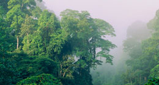
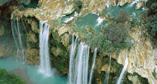
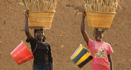
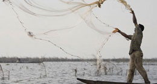
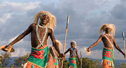
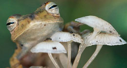

|  |  |  |
Climate Change |
Fresh Water |
Health |
Climate change is one of the greatest environmental issues of our time and we need to act quickly to prevent irreversible damage to our planet. CI is demonstrating the important role that ecosystems can play in mitigating and adapting to climate change impacts |
Water security is the reliable availability and quality of fresh water at the times and places where it is needed to meet the needs of people and other life on Earth. To achieve water security, CI's strategy targets the protection and restoration of the sources and flows of fresh water. |
To support health security, CI focuses on valuing natural ecosystems in terms of health costs and vulnerability to natural disasters, disease emergence, disease incidence and transmission and nature's known and undiscovered contributions to medicine. |
|  |  |  |
Food |
Culture |
Biodiversity |
CI supports food security by ensuring wild harvests, conserving the ability of ecosystems to support productivity in agricultural areas, and resolving unsustainable resource and land use practices |
Landscapes, seascapes and species have played a fundamental role in science, arts, recreation and religion. CI works to help secure these services and the economic benefits they provide. |
Biodiversity conservation provides substantial benefits to meet immediate human needs, such as those for clean, consistent water flows; protection from floods and storms; and a stable climate. |